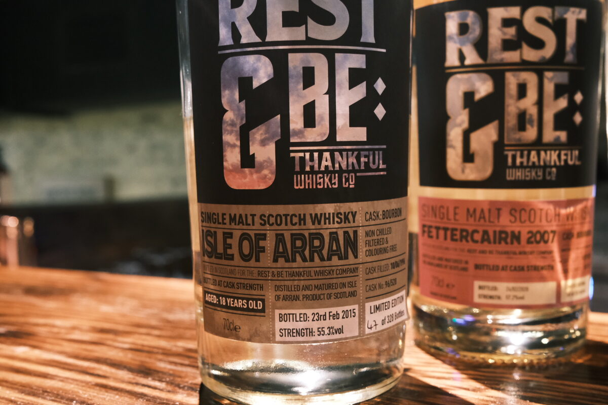

Arran 1996 Rest & Be Thankful 18 years 55.3% (bourbon)
Third for World Whisky Day! A 1996 Arran (a few out there…).
Colour Straw.
Nose Grassy! Very floral. Mangoes, quit fresh. Herbaceous, a little menthol some leafy notes. Citrus oils and zest: oranges, lemons. Bitter orange – almost like a Negroni! A little candlewax, quite perfumed.
Palate Quite malty. Thick mouthfeel. A little waxy, some oranges. Caramel and cream. Spices: cinnamon and chilli. Hot apple juice. Salted caramel and spiced apple pie.
Finish Spicy: from the palate, cinnamon, chilli, some cloves. Oak and oak spices. More caramel and a bit of chocolate. Warming and very long. Mangoes again. Malty.
Comments Enjoying the mango twist. Some interesting notes here. Terrific stuff. 86/100.

Posted by Dominic on 15 May 2021